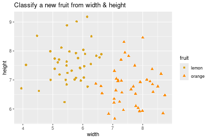
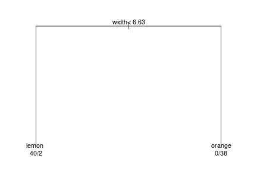
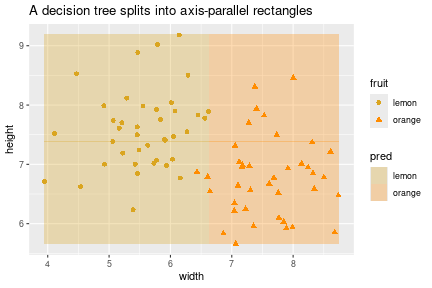

Alongside neural networks, the other workhorse for prediction — especially on tabular data — is the decision tree, and its ensemble cousin the random forest. We’ll motivate them by comparing how different classifiers carve up the input space.
Each fruit has a width and a height; we want to label it orange or lemon. A toy dataset:
set.seed(1)
n <- 40
lemons <- data.frame(width = rnorm(n, 5.5, 0.7), height = rnorm(n, 7.5, 0.7),
fruit = "lemon")
oranges <- data.frame(width = rnorm(n, 7.5, 0.7), height = rnorm(n, 7.0, 0.7),
fruit = "orange")
fruit <- rbind(lemons, oranges)
fruit$fruit <- factor(fruit$fruit)
ggplot(fruit, aes(width, height, color = fruit, shape = fruit)) +
geom_point(size = 2) +
scale_color_manual(values = c(lemon = "goldenrod", orange = "darkorange")) +
labs(title = "Classify a new fruit from width & height")
Every classifier we’ve met carves the feature space differently.
library(class)
set.seed(2)
train_idx <- sample(nrow(fruit), 60)
train <- fruit[train_idx, ]
test <- fruit[-train_idx, ]
pred <- knn(train = train[, c("width", "height")],
test = test[, c("width", "height")],
cl = train$fruit, k = 5)
mean(pred == test$fruit) # accuracy## [1] 1kNN needs no “training” beyond storing the data, but it must search all of it at prediction time, and “nearest” uses raw distances, so feature scaling matters.
A tree asks a sequence of yes/no questions. At each internal node a question like “is width > 6.5?” sends you left or right; each leaf gives a label. It looks like an upside-down tree — root at top, leaves at the bottom.
library(rpart)
tree <- rpart(fruit ~ width + height, data = fruit, method = "class")
par(mar = c(1, 1, 1, 1))
plot(tree, margin = 0.1); text(tree, use.n = TRUE, cex = 0.9)
Read a prediction by walking root-to-leaf. Notice a tree may ignore a feature entirely if it isn’t useful, and may split on the same feature more than once at different thresholds. Let’s see the rectangular boundary it induces:
grid <- expand.grid(
width = seq(min(fruit$width), max(fruit$width), length.out = 200),
height = seq(min(fruit$height), max(fruit$height), length.out = 200))
grid$pred <- predict(tree, grid, type = "class")
ggplot() +
geom_tile(data = grid, aes(width, height, fill = pred), alpha = 0.3) +
geom_point(data = fruit, aes(width, height, color = fruit, shape = fruit), size = 2) +
scale_fill_manual(values = c(lemon = "goldenrod", orange = "darkorange")) +
scale_color_manual(values = c(lemon = "goldenrod", orange = "darkorange")) +
labs(title = "A decision tree splits into axis-parallel rectangles")
In principle any boolean function of the inputs — including patterns a straight line can’t separate. The classic one is XOR / checkerboard: label \(1\) on two diagonally-opposite corners, \(0\) on the other two.
xor_df <- data.frame(
x1 = c(0, 0, 1, 1),
x2 = c(0, 1, 0, 1),
label = factor(c(0, 1, 1, 0)))
xor_df## x1 x2 label
## 1 0 0 0
## 2 0 1 1
## 3 1 0 1
## 4 1 1 0No straight line separates the two labels, so logistic regression fails here — but a small tree handles it easily (split on x1, then on x2 within each half).
A caveat about that intuition, though: in two dimensions lots of things aren’t linearly separable, but with many features (say 50), a separating hyperplane usually does exist — our 2-D geometric intuition misleads us. So logistic regression works far more often than the XOR picture suggests.
The flip side: some simple-looking functions are hard for trees. The parity function (output 1 iff an odd number of inputs are 1) is a high-dimensional checkerboard; a tree can represent it but needs to split on every feature repeatedly, so it takes a large tree and lots of data. As you allow bigger trees (more nodes, more depth), the hypothesis space — the set of labelings the tree can express — grows; logistic regression’s is always just “which hyperplane?”
Finding the optimal tree is NP-hard, so in practice we use a greedy heuristic: grow the tree top-down, at each step picking the split that looks best right now, then recurse on each side.
learn(data):
if all labels in `data` are the same -> make a leaf
else:
pick the feature (and threshold) whose split is "best"
partition data into S0, S1 by that split
learn(S0); learn(S1) # recurse on each sideDetails:
A single tree is easy to overfit and sensitive to the data. The fix that dominates tabular-data competitions (e.g. on Kaggle) is the random forest: grow many trees — each on a random resample of the data and a random subset of features — and average their predictions. Many trees ⇒ a “forest” (the name is a mild joke). You rarely build these by hand; a library does it. Empirically, for a plain table of features with labels, a random forest is often the most accurate off-the-shelf choice.
Trees are often sold as interpretable: you can read the learned tree and say “outlook matters most; if it’s sunny, then humidity matters.” True for a small tree. But two caveats: a tree past a few branches is hard to hold in your head, and because it was built greedily, the feature at the root isn’t guaranteed to be the genuinely most important one. And a random forest — an average of many trees — loses this transparency almost entirely. So “interpretable” is real but limited.